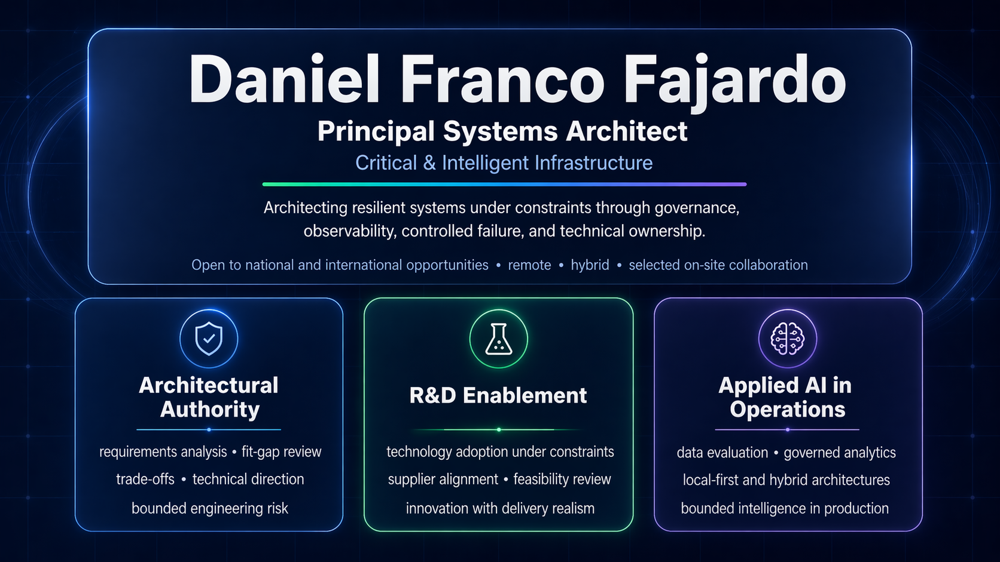
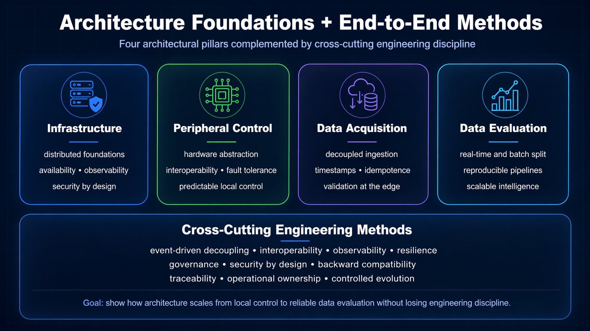
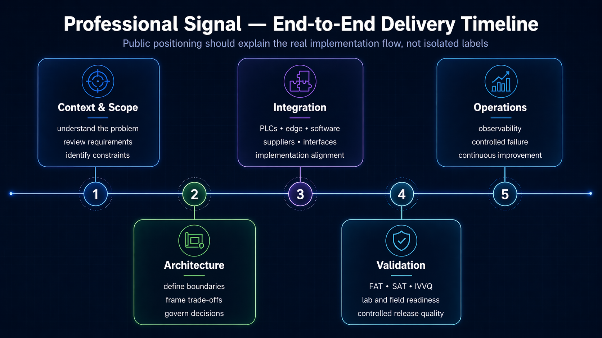

Where I add the most value
- requirements and fit-gap analysis
- technical trade-offs and engineering risk
- validation and deployment reality
- supplier alignment and delivery feasibility
- resilient operational behavior under constraints
Principal Systems Architect
Architecting resilient systems under constraints through governance, observability, controlled failure, and technical ownership.
Open to national and international opportunities — remote, hybrid, and selected on-site collaboration.

I design and govern operational systems where software, automation, infrastructure components, peripheral-control layers, data acquisition, and applied AI must remain reliable under real-world constraints.
My strongest value appears when architecture must connect technical direction, supplier reality, validation strategy, and operational behavior into a coherent, buildable path.
The methodological layer explains how infrastructure, control, acquisition, evaluation, and delivery connect under bounded engineering discipline. Public proofs should demonstrate traceability, rigor, and judgment — not proprietary scope or unsupported claims.


This landing routes to a small set of public proofs. The goal is professional clarity, easy navigation, and fast recognition of value without redundant narrative.
Navigation guide
Start with PSRP for flagship technical proof, use this landing for fast capability reading, and open inventory-stream7-rescue for secondary operational depth.
Primary public proof
Local-first probabilistic workflow, bounded interpretation, traceable artifacts, and publication-safe engineering communication.
Flagship editorial surface
Capability layer for architecture narrative, selected work, low-friction contact, and controlled public reading paths.
Secondary operational proof
Cross-platform rescue triage, constrained hardware inventory, and evidence-first reporting for Windows and Linux environments.
Publishable work in progress
Governed architecture line for resilient edge/OT systems, bounded AI-assisted operations, human oversight, auditability, and local-first operational framing.

This portfolio presents public architectural references and bounded technical proofs. It does not expose proprietary client code, confidential data, credentials, or official warning systems.
The seismic prototype is not a deterministic earthquake prediction system, not a public alerting system, and not production infrastructure.
Email: relativomec@gmail.com
LinkedIn: linkedin.com/in/daniel-franco-b27572a8
GitHub: github.com/RelativoDrako
Open to national and international opportunities — remote, hybrid, and selected on-site collaboration.